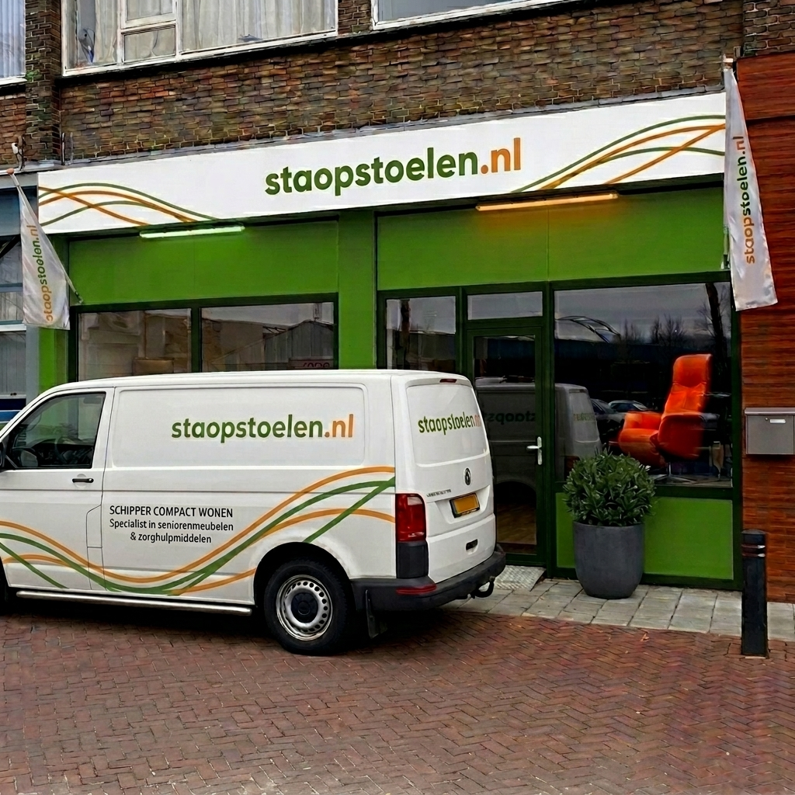
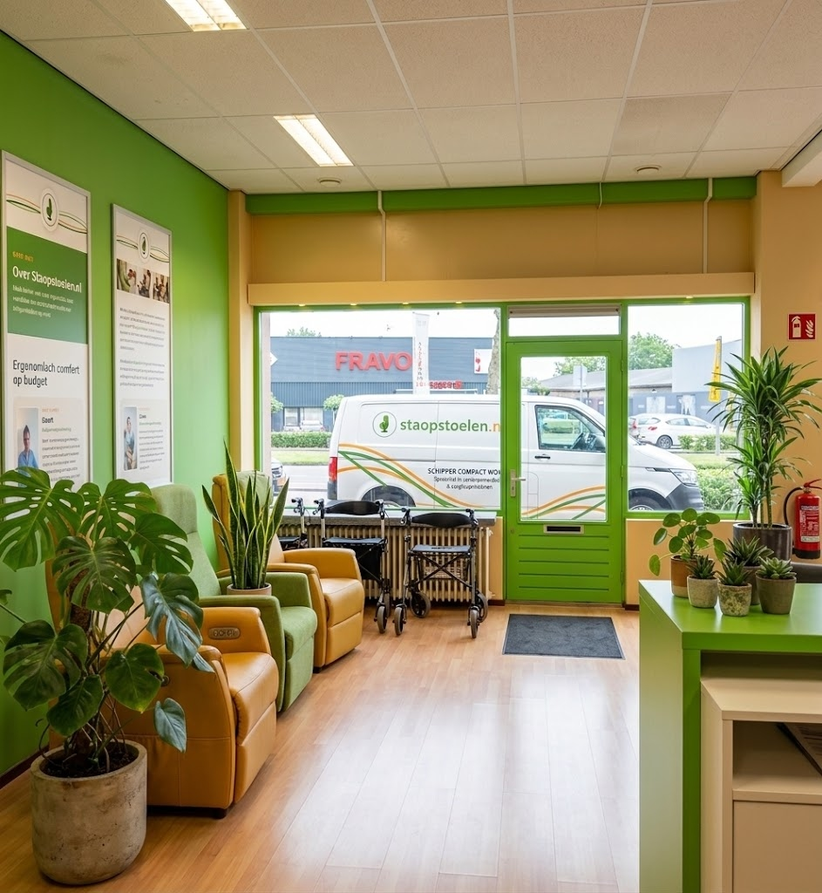

Merkt u dat opstaan uit uw favoriete stoel steeds moeizamer gaat? Of krijgt u na verloop van tijd last van uw rug of benen? Bij Staopstoelen.nl (onderdeel van Schipper Compact Wonen) begrijpen we dat een goede stoel niet alleen mooi moet zijn, maar uw lichaam vooral optimaal moet ondersteunen.
Als dé erkende zitspecialist van de regio Dordrecht en omstreken helpen we u graag uw mobiliteit en zelfstandigheid terug te krijgen. Met al bijna 30 jaar ervaring leveren we topkwaliteit zitcomfort aan particulieren, zorginstellingen en zorgverzekeraars.
Gediplomeerd Bewegingstechnoloog
Geert is onze vaste bewegingstechnoloog en expert op het gebied van ergonomie en gezond zitten. Geen stoel verlaat onze showroom zonder dat deze door Geert tot op de centimeter nauwkeurig is ingesteld op uw ideale zithoogte, zitdiepte en armleggerhoogte. Zo bent u verzekerd van een stoel die als gegoten zit.
Gratis en vakkundig bij u thuis geleverd
Wij bezorgen uw sta-op stoel netjes en gratis thuis met onze eigen bezorgbus. Onze bezorger stelt de stoel ter plekke direct op maat af en legt de werking rustig aan u uit. Bent u niet in de gelegenheid om onze winkel te bezoeken? Maak dan gebruik van onze passing aan huis: onze adviseur komt met een selectie stoelen bij u langs, zodat u in uw eigen vertrouwde huiskamer kunt proefzitten.

Een goede sta-op stoel is meer dan alleen een comfortabel meubelstuk; het is een investering in uw dagelijkse zelfstandigheid en gezondheid:
Omdat zithulpmiddelen persoonlijk zijn, adviseren wij altijd om een stoel eerst te voelen en uit te proberen. U bent van harte welkom in onze goed gevulde winkel in Dordrecht om ons aanbod vrijblijvend te bekijken en deskundig advies te ontvangen.
Bent u niet in de gelegenheid om naar ons toe te komen? Geen probleem! Onze adviseurs komen met plezier gratis en geheel vrijblijvend bij u thuis langs met een selectie stoelen, zodat u deze in uw eigen vertrouwde omgeving kunt testen.

Schipper Compact Wonen aan de Merwedestraat 239
Alweer vele jaren is Schipper Compact Wonen te vinden aan de Merwedestraat 239. 'Vroeger' zat de zaak aan de overkant, weten velen zich nog te herinneren. Al een kleine tien jaar zit de winkel aan de 'kant' van de woningen. Parkeren kan voor de deur.